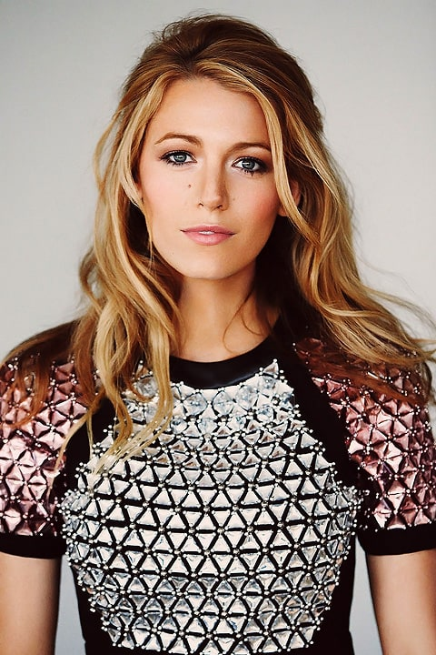

Блейк Ла́йвли (англ. Blake Lively), урождённая Блейк Эллендер Браун[1] (англ. Blake Ellender Brown; род. 25 августа 1987, Тарзана, Калифорния, США) — американская актриса и фотомодель, наиболее известная благодаря роли Серены ван дер Вудсен в сериале The CW «Сплетница» (2007—2012).
